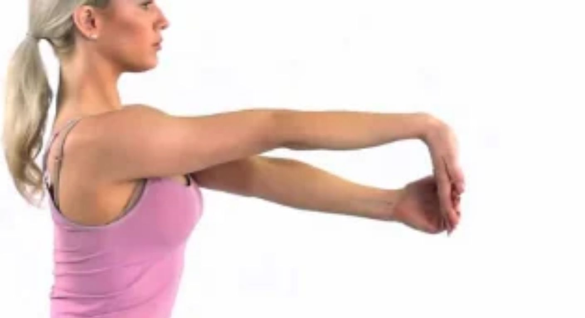
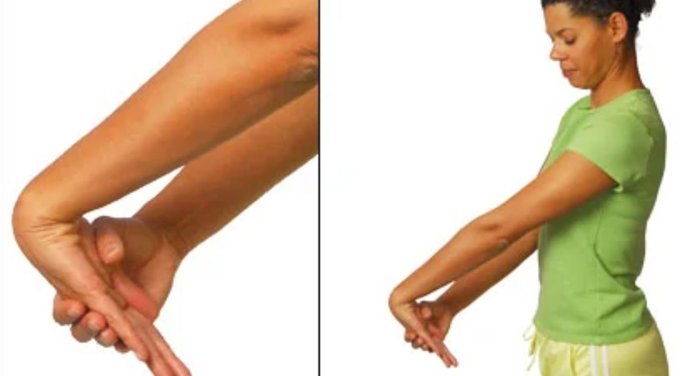
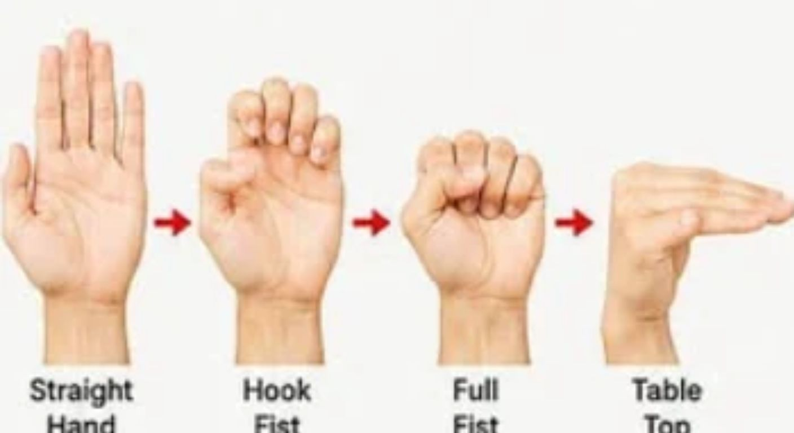
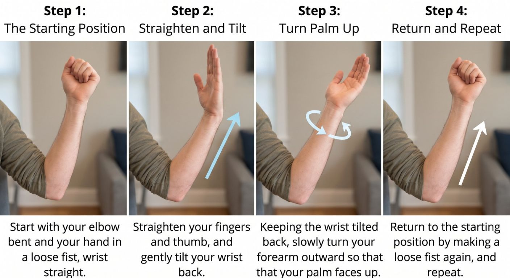
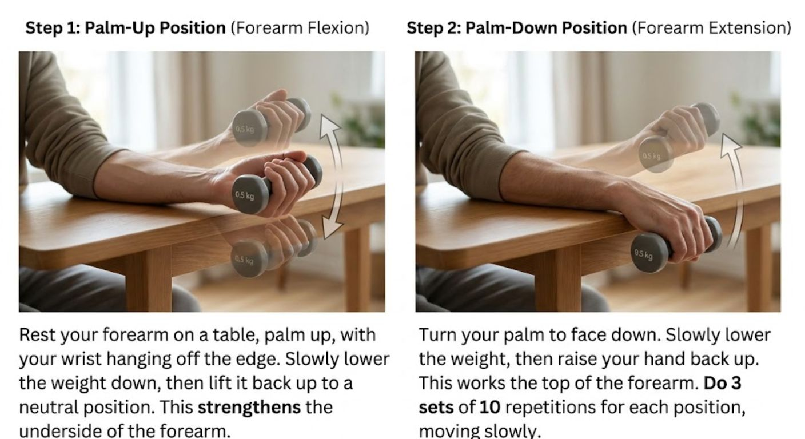
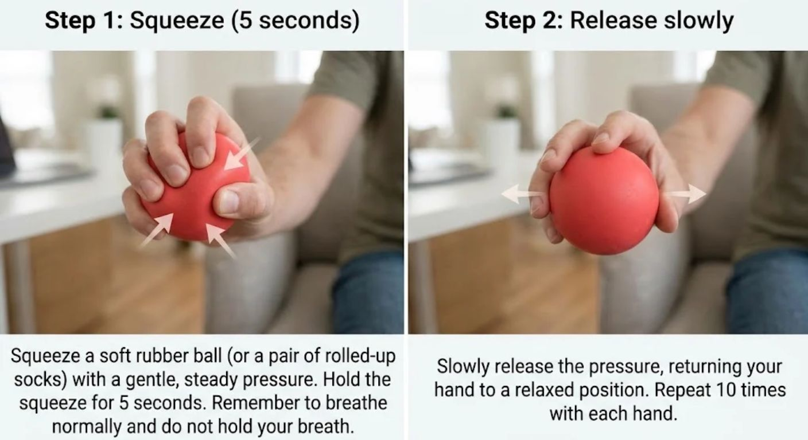

Hand and Wrist Exercises for Carpal Tunnel Syndrome: A Gentle, Safe Guide
If you live with numb, tingling hands, you may wonder whether there is anything you can do at home besides wearing a splint at night. Simple stretches, tendon glides and nerve glides are widely used as part of the treatment of mild to moderate carpal tunnel syndrome. The idea is to keep the tendons and the median nerve moving smoothly through the narrow tunnel at the wrist, ease stiffness in the forearm and keep the hand strong. Here is a gentle routine you can follow at home.
What to Expect From These Exercises
Be realistic. Studies of exercises for carpal tunnel syndrome are small and of limited quality, so they work best as a complement to other treatment (a night splint, avoiding aggravating positions, and sometimes an injection or surgery), not as a replacement. They are low-risk when done gently, and many people find they ease stiffness and discomfort. They will not fix a nerve that is badly compressed. If your numbness is constant, or you notice weakness in the hand, see a doctor rather than relying on exercises alone.
1. Wrist Stretches (Flexor and Extensor)
These two stretches lengthen the muscles of the forearm that control the wrist and fingers. Keep your elbow straight, move slowly, and never bounce. You should feel a mild pull in the forearm, not tingling or numbness in the fingers.

Wrist flexor stretch (underside of the forearm)
Extend your arm straight in front of you with your elbow straight and your palm facing up. Use your other hand to gently bend the wrist down, drawing your fingers toward the floor, until you feel a mild stretch along the palm side of your forearm. Hold for 15 to 30 seconds, then relax.

Wrist extensor stretch (top of the forearm)
Extend your arm straight in front of you with your elbow straight and your palm facing down. Use your other hand to gently bend the wrist down, so your fingers point toward the floor, until you feel a mild stretch along the top of your forearm. Hold for 15 to 30 seconds, then relax.
- How often: repeat each stretch 3 times on each wrist, 2 to 4 times a day.
- If a stretch brings on tingling, numbness or burning in the fingers, ease off or stop. Bending the wrist to its extremes can squeeze the nerve further in some people.
2. Tendon Glides
Nine tendons that bend your fingers share the carpal tunnel with the median nerve. Tendon glides take the fingers through a series of positions so that these tendons slide smoothly and the hand stays supple. Move slowly from one position to the next and hold each for about 3 seconds.

- Straight hand: hold your fingers and thumb straight out.
- Hook fist: bend only the top two joints of your fingers into a hook, keeping the knuckles at the base of the fingers straight.
- Tabletop: keep your fingers straight and bend only at the knuckles at the base of the fingers, so your hand forms a flat tabletop, like an “L”.
- Straight fist: bend your fingers at the knuckle and the middle joint so the fingertips rest on the upper part of your palm, keeping the tip joints straight.
- Full fist: curl all the finger joints so that your fingertips touch your palm and make a full fist.
- How often: repeat the whole sequence for 30 to 60 seconds (about 5 to 10 repetitions), 2 to 4 times a day.
3. Median Nerve Glides
The median nerve is the nerve that is squeezed in carpal tunnel syndrome. These movements encourage it to slide gently through the wrist and forearm. They should feel like smooth movement, not like a stretch. Go slowly and keep your neck relaxed and neutral.

- Start with your elbow bent and your hand in a loose fist, wrist straight.
- Straighten your fingers and thumb, and gently tilt your wrist back.
- Keeping the wrist tilted back, slowly turn your forearm outward so that your palm faces up.
- Return to the starting position by making a loose fist again, and repeat.
- How often: 10 to 15 slow repetitions, once or twice a day.
- Keep the movements gentle and never push through sharp pain. If you get tingling, numbness or burning in the fingers, stop and rest.
4. Strengthening Exercises
Once your symptoms have settled, light strengthening helps your wrist and hand cope with daily tasks. Keep the effort gentle. Gripping hard can make carpal tunnel symptoms worse, so stop if the tingling returns.

Wrist curls with a light weight
Hold a light weight, such as a 0.5 kg (1-pound) dumbbell or a small can of food. Rest your forearm on a table with your palm facing up and your wrist hanging off the edge. Slowly lower the weight down, then lift your hand back up to a neutral position or slightly beyond. This strengthens the muscles on the underside of the forearm. Then turn your palm to face down and repeat, which works the muscles on the top of the forearm. Do 3 sets of 10 repetitions for each position, moving slowly in both directions.

Ball squeeze
Squeeze a soft rubber ball or a pair of rolled-up socks with a gentle, steady pressure for 5 seconds, then release slowly. Repeat 10 times with each hand. Breathe normally throughout and do not hold your breath.
How Much and How Often?
Start with the lower numbers and build up gradually over a few weeks, as it feels comfortable. The stretches and the glides can be done several times a day. The strengthening exercises are best done once a day, or every other day. Move slowly and smoothly, and keep your shoulders and neck relaxed. Pairing the exercises with regular breaks from repetitive or gripping tasks, and with a night splint if your doctor has advised one, gives the best chance of benefit.
How to Exercise Safely: The “Traffic Light” Rule
With a nerve problem, the key is to listen to your fingers as well as your muscles. Use this simple traffic light system to guide you:
- 🟢 Green light: a mild pull in the forearm or a gentle muscle effort. Safe to proceed!
- 🟡 Yellow light: a stronger pull, or brief, mild tingling that fades within a few seconds of stopping. Ease off, reduce the range of movement or do fewer repetitions.
- 🔴 Red light: sharp pain, or tingling, burning or numbness in the fingers that persists or gets worse. Stop immediately.
As a rule, any ache after exercise should settle within a few hours, and certainly within 24 hours. If it does not, do less next time and mention it to your doctor.
When to See a Doctor Before Exercising
Exercises are not enough, and may delay the right treatment, if you have any of the following. Seek medical advice promptly:
- constant numbness, rather than numbness that comes and goes
- weakness of the hand, or thinning of the muscle at the base of the thumb
- dropping objects frequently
- wrist pain, swelling or numbness after an injury or fall
- a hot, red or swollen wrist or hand, especially with fever
- numbness together with weakness of the face or arm, or difficulty speaking, which is an emergency
Numb hands can also come from a pinched nerve in the neck (see neck pain and cervicalgia) or from nerve damage due to diabetes and other conditions, so persistent symptoms deserve a proper assessment.
The Bottom Line
For carpal tunnel syndrome, gentle and regular beats forceful. A few minutes of stretches, tendon glides and nerve glides several times a day, together with a night splint, regular breaks and good hand positions, is a sensible way to look after your wrists. The evidence for exercises is limited, so see them as one part of the treatment, and do not hesitate to ask for help if your symptoms are not improving.
Always consult your doctor or a physiotherapist before starting a new exercise routine, especially if you have constant numbness, weakness in the hand or any worsening of your symptoms.
Numb, tingling hands not improving with home exercises? Message directly and ask.
Message on WhatsAppThis article is general health information and does not replace a medical consultation. In a medical emergency, call SAMU (114) or go to your nearest hospital.